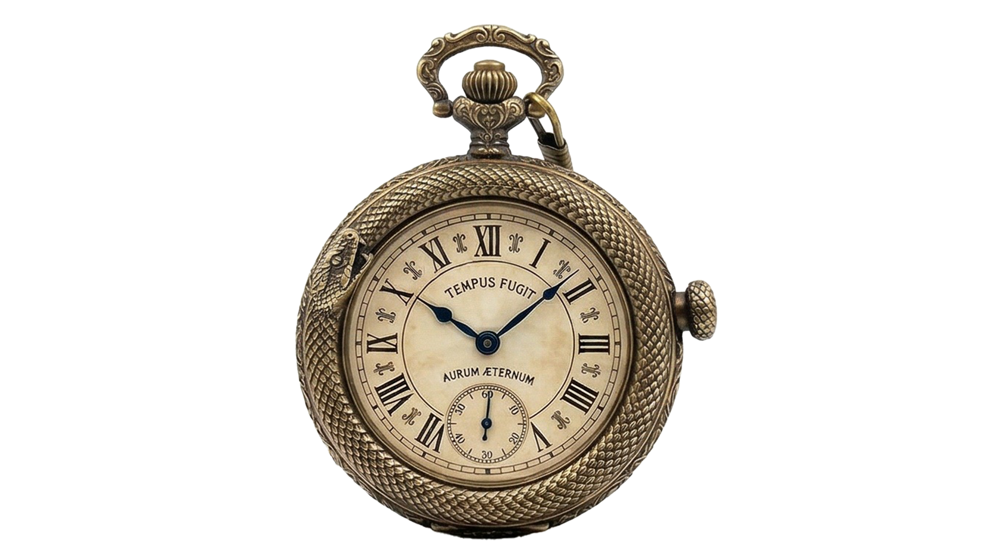
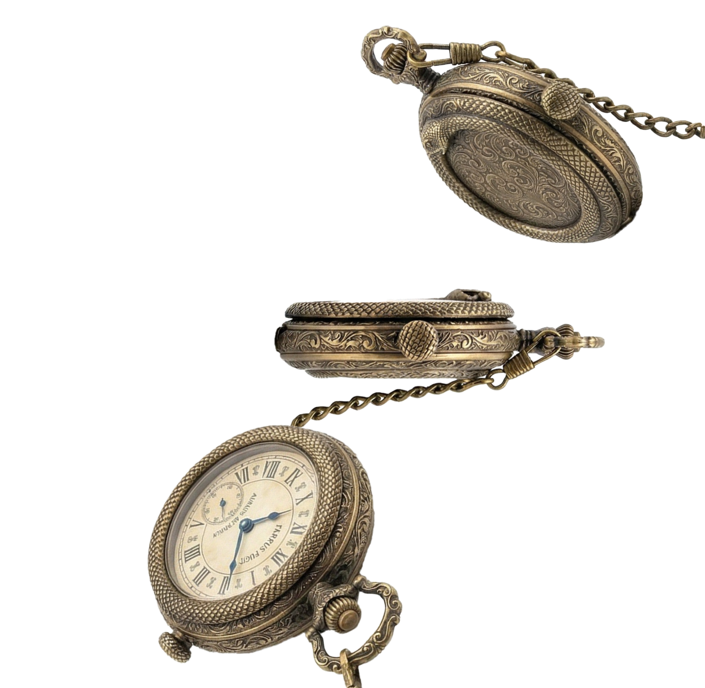
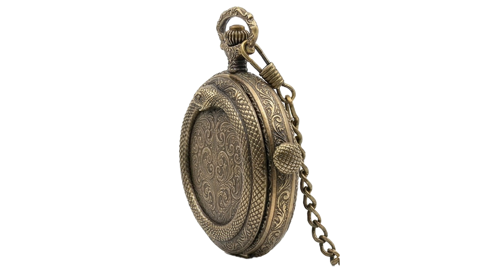
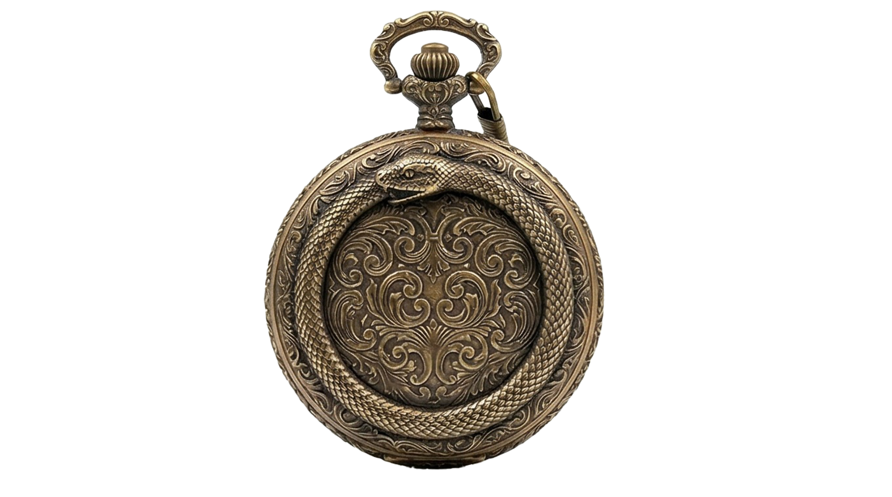
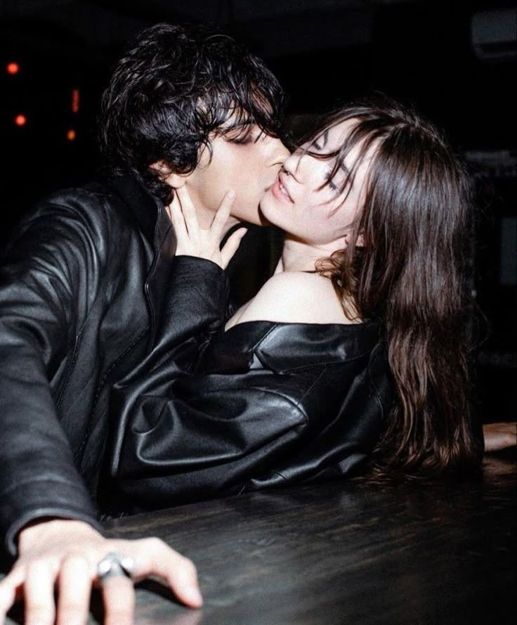
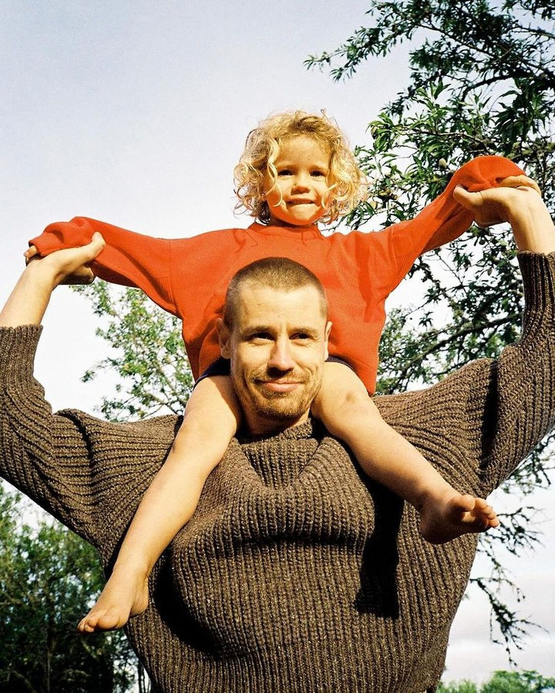
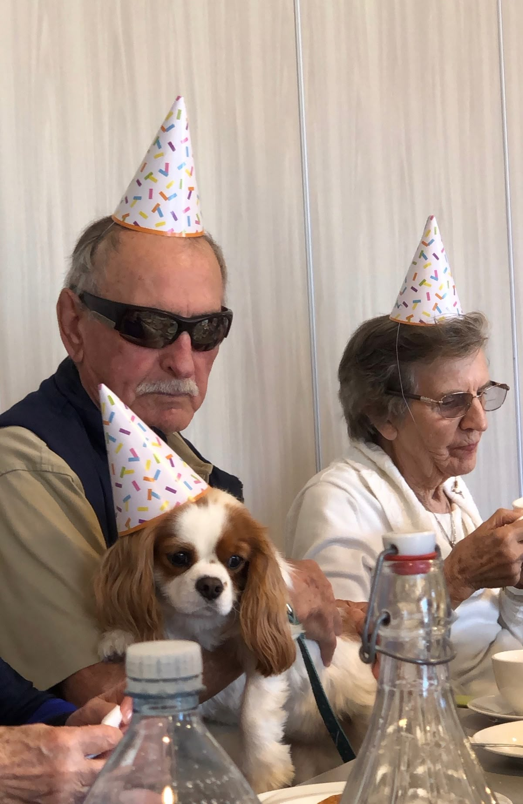
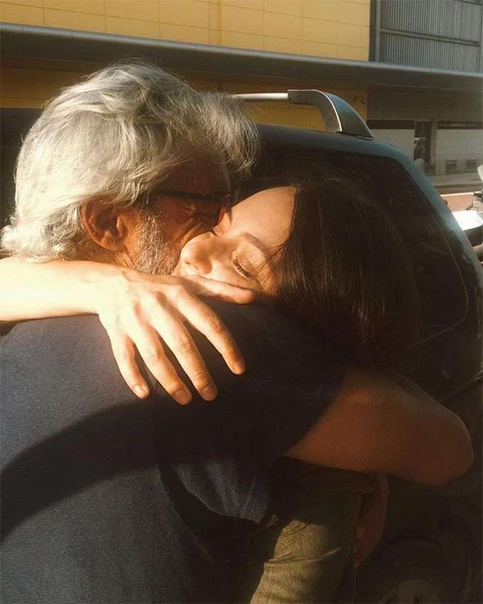
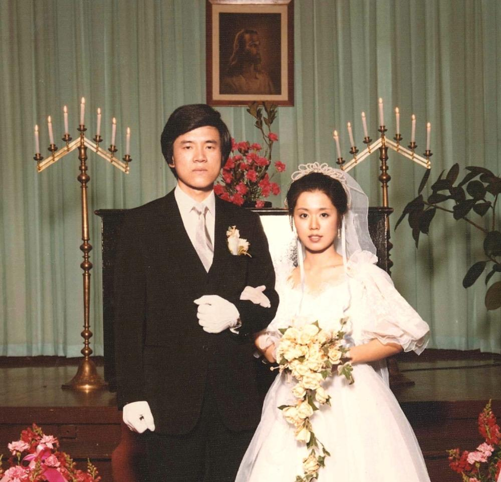

내 인생은 어디서부터 잘못된걸까
재미도 없고 의미도 없다
포기하고 싶다
삶에 미련이 없는 당신
당신에게 재미있는 기회를 드립니다
새로운 삶의 기회를 누려보세요.
endlessly repeating the act of eating itself from the tail while simultaneously regenerating.
Ouroborus Watch

우로보로스 시계
우로보로스는 그리스어로 “꼬리를 삼키는 자”라는 의미를 가지고 있습니다. 자신의 꼬리를 물고 삼키는 뱀이나 용의 형상을 한 고대 상징입니다. 시작과 끝이 맞물려 있는 원형으로 영원성, 윤회, 끊임없이 재생되는 순환의 의미를 담고 있습니다.

24시간 전으로 돌아갑니다
사용법은 간단합니다. 오른쪽에 버튼을 누르면 누른 순간으로부터 정확히 24시간 전으로 돌아갑니다. 한번 누르면 절대 번복할 수 없습니다. 신중하게 누르세요.

사용 후 36시간이 지나야
재사용할 수 있습니다.
24시간 전으로 돌아가고 나서 36시간 동안 사용이 불가능합니다. 즉 12시간의 텀이 존재하고 시간을 영원히 유지하는 것은 불가능합니다. 잘 계산해서 사용하시기를 권장드립니다.


DO NOT ABUSE
사용 후 3년 뒤에 죽습니다.
사용을 시작한 날로부터 3년 뒤에 당신은 죽게 됩니다. 미련 없이 3년 뒤에 죽을 각오가 되있는 분들만 시계를 사용해주시길 바랍니다. 한번 사용하게 되면 이 조건은 다시 되돌릴 수 없습니다.
사용법은 당신에게 달렸습니다.
시간을 되돌린 다음, 당신이 원하는 일들을 하시길 바랍니다. 부와 명예를 축적할 수도, 이어지지 못했던 인연을 다시 이어지게 할 수도, 사랑했던 가족과 다시 한번 마지막 시간을 보낼 수도, 누군가의 사고나 죽음을 막을 수도 있습니다.





신중히 생각하세요.
이 시계의 능력은 단순한 능력이 아니라 큰 대가가 따릅니다. 그 대가를 온전히 감당할 수 있을 때 사용하세요. 또한 사용 후 후회해도 소용없습니다.